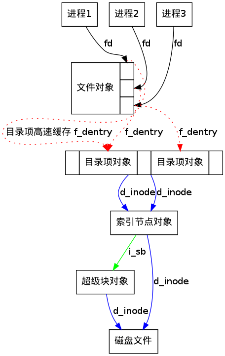

虚拟文件系统
虚拟文件系统所隐含的思想是把表示很多不同种类文件系统的共同信息放入内核；其中有一个字段或者函数来支持Linux所致吃的所有实际文件系统所提供的任何操作。
就是说，VFS是一个虚拟的内核软件层，是逻辑上的文件系统
| VFS |
| 实际文件系统 |
这之间，存在一个逻辑上的转换关系
在内核中的open动作经过VFS的转换，对最终调用具体的文件系统的open函数。这样从应用层看，不管什么样子的文件系统，都是通过open来打开一个文件的。
VFS支持三种文件系统
| 磁盘文件系统 | 网络文件系统 | 特殊文件系统 |
| Ext2/Ext3/sysv/FAT/NTFS/ISO9660/HFS | NFS/Coda/AFS/CIFS/NCP | /proc |
VFS所隐含的主要思想在于，引入了一个通用的文件模型(common file model),这个模型能够表示所有支持的文件系统。
要实现每个具体的文件系统，必须将其物理组织结构转换为虚拟文件系统的通用文件模型。
从本质上说，Linux内核不能对一个特定的函数进行硬编码来执行诸如read()或者ioctl()这样的操作，而是对每个操作都必须使用一个指针，指向要访问的具体文件系统的适当函数。
也就是说，通用文件模型是面向对象的，既定义了数据结构，也定义了其上的操作方法。因为用C实现的，所以采用了结构体+函数指针的方法。
用一个file数据结构来表示，用了里面的f_op字段。
通用文件模型由下列对象组成：
| 超级块对象 | 索引节点对象 | 文件对象 | 目录对象 |
| superblock object | inode object | file object | dentry object |
| 存放已安装文件系统的有关信息。对基于磁盘的文件系统，这类对象通常应用于存放在磁盘上的文件系统控制块 | 存放关于具体文件的一般信息。对基于磁盘的文件系统，这类对象通常对应于存放在磁盘上的文件控制块。每个索引节点对象都有一个索引节点号，这个节点号唯一地标识文件系统中的文件 | 存放打开文件与进程之间进行交互的有关信息。这类信息仅当进程访问文件期间存在于内核内存中 | 存放目录项(也就是文件的特定名称)与对应文件进行链接的有关信息。每个磁盘文件系统都以自己特有的方式将该类信息存在磁盘上 |
|  |
| 进程与VFS对象之间的交互 |
其中两个进程使用同一个硬链接(2,3)。
在这中情况下，每个进程都使用自己的文件对象，但只需要两个目录项对象，每个硬链接对应一个目录项对象。
这两个目录项对象指向同一个索引节点对象，该索引节点对象标识超级块对象，以及随后的普通磁盘文件。
VFS将最经常使用的目录项对象放在目录项高速缓存的磁盘高速缓存中，以加速从文件路径名到最后一个路径分量的索引节点的转换过程。
emacs 重复删除 跟踪内核启动过程
/hardware/telechips/nand/tcc_mtd.c:tccmtd_probe
/hardware/telechips/nand/tcc_mtd.c:tcc_mtd_scan
/hardware/telechips/nand/tcc_mtd.c:TCC_MTD_AreaScanInfo
因此关键点就在TCC_MTD_AreaScanInfo当中了
下面让我们着重的分析一下这个函数
static int TCC_MTD_AreaScanInfo(struct mtd_info *mtd)
{
struct tcc_nand_chip *chip = mtd->priv;
unsigned int nChipNo;
unsigned int i;
int nSignature;
unsigned int iMTDPartIndex;
unsigned int nMTDReserved_Num;
unsigned int nBlockSize, nPartSizeKB;
unsigned int nTCC_MTD_TotalBlockNum;
unsigned int nAccBadBlkNum = 0;
unsigned int nBadBlkNum = 0;
unsigned int rMTDFTLBlk;
unsigned int nMTDPartOffset[nand_platform_data->nr_parts];
TNFTL_INIT_INFO *sInitInfo;
NAND_IO_DEVINFO *nDevInfo = &chip->dev[0];
NAND_IO_ERROR res;
//=============================================
// Intialize variables
//=============================================
sInitInfo = (TNFTL_INIT_INFO*) &chip->buffers.databuf[NAND_SB_BOOT_PAGE_ECC_SIZE];
res = NAND_IO_ReadPage(nDevInfo, 0, 0, 1,
chip->buffers.databuf,
chip->buffers.oobbuf,
ECC_ON);
if ( res != SUCCESS )
printk("[TCC MTD] Read Golden Block Fail !! [Error:0x%08X]\n", res);
nSignature = (chip->buffers.databuf[0] +
(chip->buffers.databuf[1] << 8) +
(chip->buffers.databuf[2] << 16) +
(chip->buffers.databuf[3] << 24));
/* Compare Signature */
if ( (nSignature == GMC_NAND_SECURE_BOOT_TYPE) || (nSignature == GMC_NAND_NOMAL_BOOT_TYPE) ) {
chip->end=((sInitInfo->ROAreaSize >> nDevInfo->ShiftPageSize) >> nDevInfo->ShiftPpB) + chip->offset;
nMTDReserved_Num = NAND_MTD_SetupMTDReservedBlock(
nDevInfo->Feature.PBpV, nDevInfo->Feature.BBpZ,
chip->end - chip->offset);
if (nMTDReserved_Num % 1)
nMTDReserved_Num++;
if(nDevInfo->ExtInterleaveUsable == TRUE)
nMTDReserved_Num = nMTDReserved_Num << 1;
res = NAND_SetGoldenBadMarkofPBlock(chip->dev);
if ( (chip->end-chip->offset) > TCC_MTD_MAX_LPT_SIZE ) {
printk("\n\n[MTD TCC] MTD Partition Over Size!!!\n\n");
printk("[gMTDStBlkAddr:%d] [gMTDEdBlkAddr:%d]\n",chip->offset, chip->end);
return SUCCESS;
}
nTCC_MTD_TotalBlockNum = 0;
nBlockSize = ( 1<<nDevInfo->ShiftPageSize ) << nDevInfo->ShiftPpB;
nBlockSize = nBlockSize >> 10;
nMTDPartOffset[0] = chip->offset;
for(iMTDPartIndex=1; iMTDPartIndex<nand_platform_data->nr_parts; iMTDPartIndex++) {
nPartSizeKB = nand_platform_data->parts[iMTDPartIndex-1].size >> 10;
nMTDPartOffset[iMTDPartIndex] = nMTDPartOffset[iMTDPartIndex-1] + (nPartSizeKB/nBlockSize);
}
nMTDPartOffset[nand_platform_data->nr_parts] = chip->end;
for (iMTDPartIndex = 0 ; iMTDPartIndex < nand_platform_data->nr_parts ; iMTDPartIndex++) {
nBadBlkNum = 0;
NAND_MTD_GetPhyBlkAddr(nDevInfo, nMTDPartOffset[iMTDPartIndex] + nAccBadBlkNum, &rMTDFLBlk, &nChipNo);
printk("[MTD TCC] PartName:%10s] [StBlk :%4d] [ChipNo:%d]\n",
nand_platform_data->parts[iMTDPartIndex].name, rMTDFTLBlk, nChipNo);
for (i = nMTDPartOffset[iMTDPartIndex] + nAccBadBlkNum ;
i < nMTDPartOffset[iMTDPartIndex+1] + nAccBadBlkNum + nBadBlkNum;
++i ) {
NAND_MTD_GetPhyBlkAddr(nDevInfo, i, &rMTDFTLBlk, &nChipNo);
res = NAND_GetGoldenBadMarkofPBlock(nChipNo, rMTDFTLBlk);
if (res == SUCCESS) {
chip->lpt[nTCC_MTD_TotalBlockNum] = rMTDFTLBlk;
chip->cs[nTCC_MTD_TotalBlockNum] = nChipNo;
++nTCC_MTD_TotalBlockNum;
} else {
printk("[MTD TCC] [PartName:%10s] [BadBlk:%4d] [ChipNo:%d]\n",nand_platform_data->parts[iMTDPartIndex].name, rMTDFTLBlk, nChipNo);
++nBadBlkNum;
}
}
nAccBadBlkNum += nBadBlkNum;
printk("[MTD TCC] [PartName:%10s] [EndBlk:%4d] [ChipNo:%d]\n", nand_platform->parts[iMTDPartIndex].name, rMTDFTLBlk, nChipNo);
}
printk("[MTD TCC] [MTDTotalBlk:%4d] [MTDBadBlk:%2d] [MTDStBlk:%3d] [MTDEdBlk:%3d]\n"
, nTCC_MTD_TotalBlockNum, nAccBadBlkNum, chip->offset, chip->end + nAccBadBlkNum );
printk("[MTD TCC] NAND device: Manufacturer ID: 0x%x, Chip ID:0x%x\n", nDevInfo->Feature.DeviceID.Code[0], nDevInfo->Feature.DeviceID.Code[1]);
chip->end += nMTDReserved_Num;
} else {
printk("\n\n[MTD TCC] Search Fail: MTD Partition Infomation\n\n");
}
return res;
}